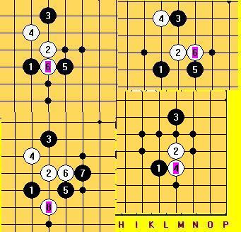

规则都要改了 棋谱留着发霉？你做棋谱是为了卖钱 拿出来分享吧
#1 规则都要改了 棋谱留着发霉？你做棋谱是为了卖钱 拿出来分享吧作者：wrwak 发表时间：2008-11-4 21:50:01
帮忙看看这几个开局怎么搞#2 Re:规则都要改了 棋谱留着发霉？你做棋谱是为了卖钱 拿出来分享吧作者：wrwak 发表时间：2008-11-4 22:05:54
最后通大残月 建议大家先指点一下最后一个图 怎么下前面几步#3 Re:规则都要改了 棋谱留着发霉？你做棋谱是为了卖钱 拿出来分享吧作者：wrwak 发表时间：2008-11-7 15:11:58
都留着卖钱吗 这种开局比赛又没用 就是研究玩玩 有的快发吧#4 Re:规则都要改了 棋谱留着发霉？你做棋谱是为了卖钱 拿出来分享吧作者：冷面孤煞 发表时间：2008-11-9 11:25:36
 棋谱留着砍人，显示自己比别人强，哈哈，我可没这么想挖
棋谱留着砍人，显示自己比别人强，哈哈，我可没这么想挖#5 Re:规则都要改了 棋谱留着发霉？你做棋谱是为了卖钱 拿出来分享吧作者：黄药师 发表时间：2009-7-1 12:55:34
挖出宝藏了～～～～～～～～～
#6 Re:规则都要改了 棋谱留着发霉？你做棋谱是为了卖钱 拿出来分享吧作者：忧郁的双眼 发表时间：2009-7-1 12:57:14
规则改了，研究还是可以用。。。
楼主这么不懂事，哇哈哈！！！
#7 Re:规则都要改了 棋谱留着发霉？你做棋谱是为了卖钱 拿出来分享吧作者：不知 发表时间：2009-7-1 15:24:12
 改规则而已..很多研究还是可以通用的..
改规则而已..很多研究还是可以通用的..#8 Re:规则都要改了 棋谱留着发霉？你做棋谱是为了卖钱 拿出来分享吧作者：极地剑客 发表时间：2009-7-1 16:48:27
楼主要是交出几个MM来的话~我相信这里很多大师愿意给你分享谱的~#9 Re:规则都要改了 棋谱留着发霉？你做棋谱是为了卖钱 拿出来分享吧作者：流逝 发表时间：2009-7-2 4:50:17
 还真有天天想等馅饼的人
还真有天天想等馅饼的人#10 Re:规则都要改了 棋谱留着发霉？你做棋谱是为了卖钱 拿出来分享吧作者：wrwak 发表时间：2009-7-2 8:01:36
这什么时候的贴 。现在出去最后一图 都黑必胜了。#11 Re:规则都要改了 棋谱留着发霉？你做棋谱是为了卖钱 拿出来分享吧作者：黄涛 发表时间：2009-7-5 12:54:05
楼主图一是必胜谱吗
#12 Re:Re:规则都要改了 棋谱留着发霉？你做棋谱是为了卖钱 拿出来分享吧作者：白河愁 发表时间：2009-7-5 17:53:36
引用：
原文由 wrwak 发表于 2009-7-2 8:01:36 :
这什么时候的贴 。现在出去最后一图 都黑必胜了。
。。。。。。
貌似这是你自己发的哎